本周我们将学习如何让线性回归变得更快、更强大。00:04
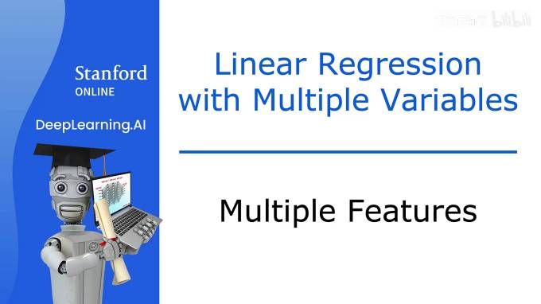
到本周结束，你将完成这门第一门课程三分之二的内容。00:10
我们先来看一个线性回归版本，它不仅能看一个特征，还能看许多不同的特征。00:16
在原始版本的线性回归中，你只有一个特征 x，即房屋的面积，并且你能预测 y，也就是房价。00:25
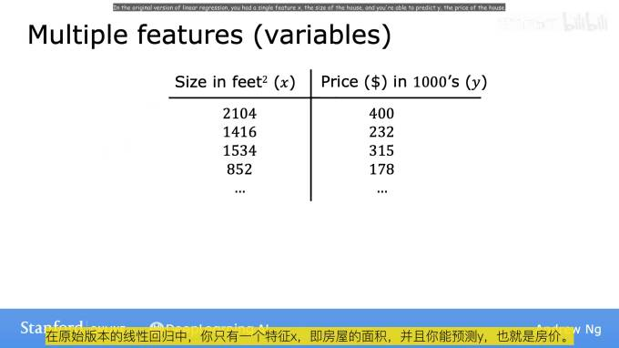
那时模型是 f 下 w，下 b，括号 x 等于 wx 加 b。00:38
但现在，如果你不仅仅有房屋面积这一个特征来尝试预测价格呢？00:46
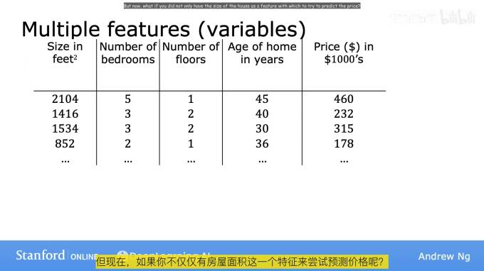
如果你还知道卧室的数量、楼层的数量以及房龄，这似乎会给你更多信息来预测价格。00:52
为了引入一点新的符号，我们将使用变量 x 下标一、x 下标二、x 下标三和 x 下标四来表示这四个特征。01:05
为简单起见，我们再引入一点符号。01:17
我们将写作 x 下标，或者有时我简称为 x 子 j，来代表特征的列表。01:21
这里，j 将从一取到四，因为我们有四个特征。01:30
我将用小写 n 来表示特征的总数。01:36
所以在这个例子中，n 等于四。01:42
和之前一样，我们将使用 x 上标 i 来表示第 i 个训练样本。01:45
那么这里，x 上标 i 实际上将是一个包含四个数字的列表，或者有时我们称之为一个向量，它包含了第 i 个训练样本的所有特征。01:53
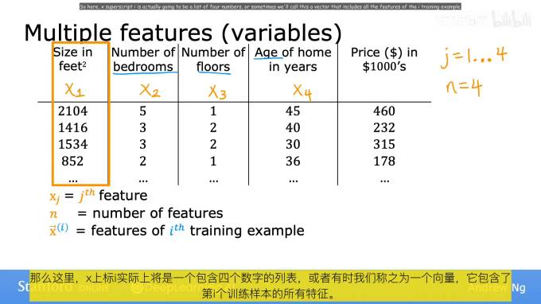
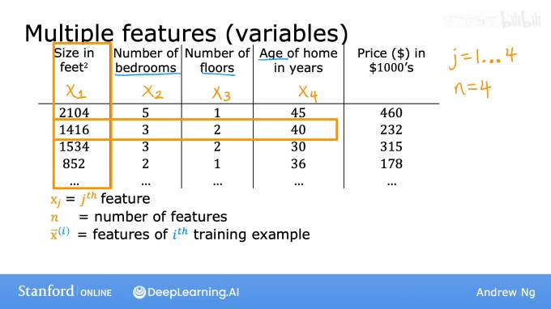
举个具体例子，带括号的 x 上标二将是第二个训练样本的特征向量。02:09
所以它将等于这个：一千四百一十六，三十二和四十。02:19
严格来说，我是把这些数字写成了一行。02:25
所以有时这被称为行向量，而不是列向量。02:29
但如果你不知道区别是什么，不用担心。02:34
对于现在这个目的，这没那么重要。02:38
而为了指代第 i 个训练样本中的特定特征，我将写作 x 上标 i，下标 j。02:41
举例来说，x 上标二，下标三，将是第二个训练样本中第三个特征的值，也就是楼层数量，所以那将等于二。02:52
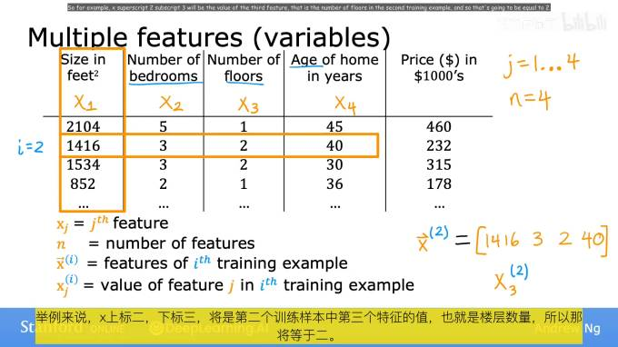
有时，为了强调这个 x 二不只是一个数字，而实际上是一个数字列表，即一个向量，我们会在它上面画一个小箭头，就为了直观地表示它是一个向量，这里也一样。03:08
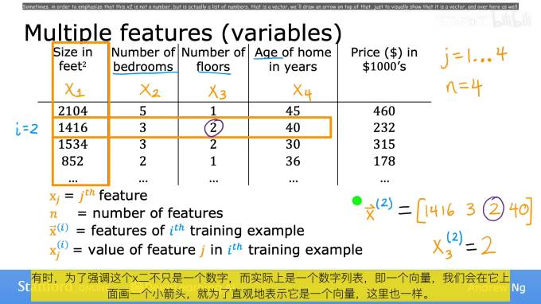
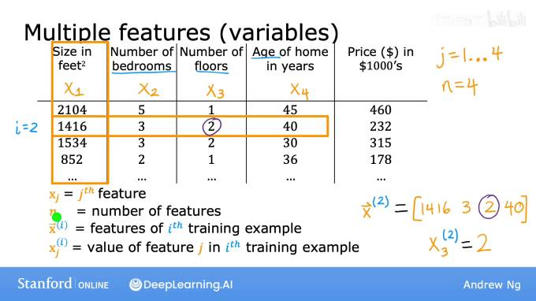
但你在自己的符号中不必非得画这个箭头。03:24
你可以把这个箭头看作一个可选的标识符，有时用它只是为了强调这是一个向量而不是一个数字。03:29
现在我们有了多个特征，来看看我们的模型会是什么样子。03:37
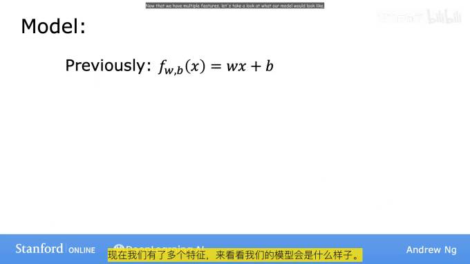
之前，我们是这样定义模型的，那时 x 是单个特征，也就是单个数字，但现在有了多个特征，我们将有不同的定义。03:43
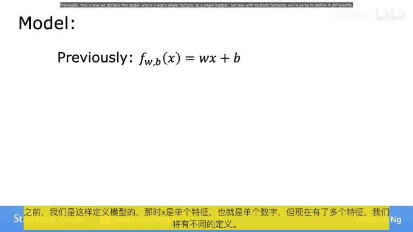
取而代之，模型将是 f 下 w，下 b，括号 x 等于 w 一 x 一加 w 二 x 二加 w 三 x 三加 w 四 x 四加 b。03:55
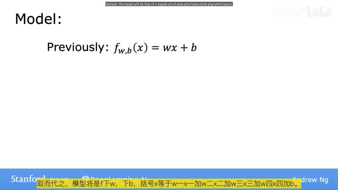
对于房价预测，一个可能的模型可能是，我们估计房价为零点一乘以 x 一，即房屋面积，加上四乘以 x 二，即卧室数量，加上十乘以 x 三，即楼层数量，减去二乘以 x 四，即房龄，再加上八。04:13
加上四乘以 x 二，即卧室数量，加上十乘以 x 三，即楼层数量，减去二乘以 x 四，即房龄，再加上八。04:25
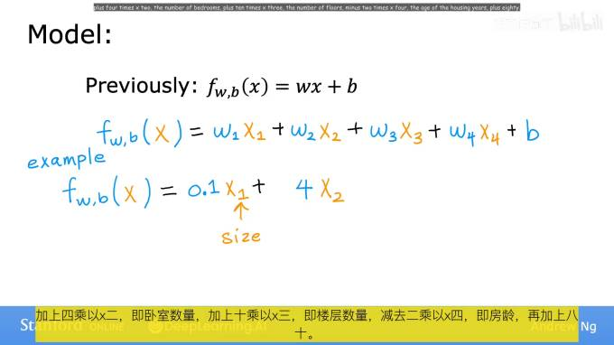
让我们稍微思考一下如何解释这些参数。04:37
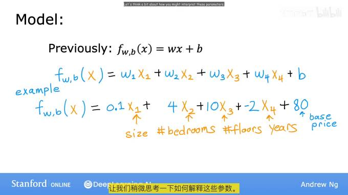
如果模型试图以千美元为单位预测房价，你可以认为这个 b 等于八十意味着，一栋房子的基础价格起步价大约是八万美元，假设它没有面积、没有卧室、没有楼层，也没有房龄。04:41
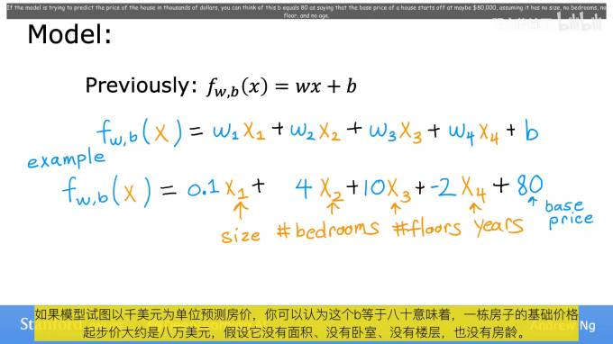
你可以认为这个零点一意味着，也许每增加一平方英尺，价格就会增加零点一千美元，也就是一百。04:59
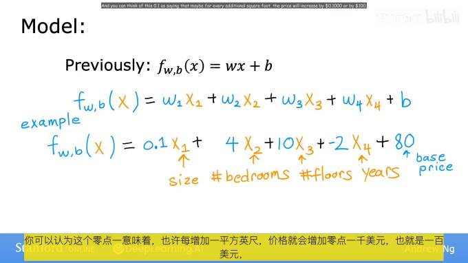
因为我们说每增加一平方英尺，价格就增加零点一，你知道，乘以一千美元，也就是一百美元。05:12
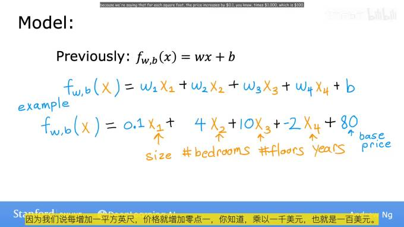
也许每增加一间浴室，价格增加四千美元。05:22
每增加一个楼层，价格可能增加一万美元。05:28
而房龄每增加一年，价格可能减少两千美元，因为参数是负二。05:32
一般来说，如果你有 n 个特征，那么模型将看起来像这样。05:41
这里再次给出具有 n 个特征的模型定义。05:50
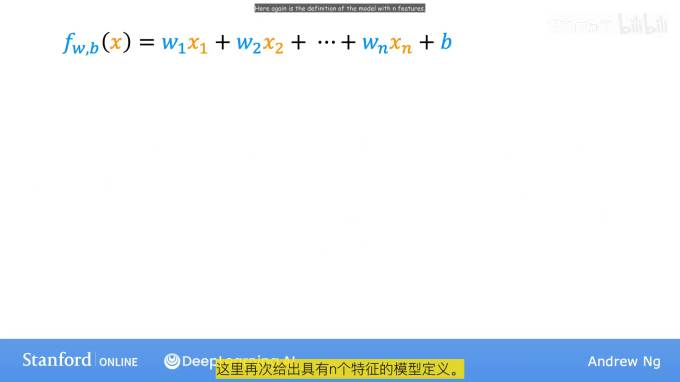
我们接下来要做的是引入一点符号，来以一种更简单但等价的方式重写这个表达式。05:55
让我们将 w 定义为一个数字列表，列出参数 w 一、w 二、w 三，一直到 wn。06:04
在数学中，这被称为向量。06:13
有时为了指明这是一个向量，即意味着一组数字的列表，我会在顶部画一个小箭头。06:16
你不必总是画这个箭头，在你的符号中你可以画也可以不画。06:25
所以你可以把这个小箭头仅仅看作一个可选的标识符，来提醒我们这是一个向量。06:31
如果你以前上过线性代数课，你可能会认出这是一个行向量，与列向量相对。06:38
但如果你不知道这些术语是什么意思，你不必担心。06:45
接下来，和之前一样，b 是一个数字，而不是向量。06:51
所以这个向量 w 连同这个数字 b 就是模型的参数。06:57
我也将 x 写作一个列表或向量，同样是行向量，它列出了所有特征 x 一、x 二、x 三，一直到 xn。07:05
这同样是一个向量，所以我将在顶部加一个小箭头来表示。07:19
在上方的符号中，我们也可以在这里和这里添加小箭头，以表示那个 w 和那个 x 实际上是这些数字的。07:28
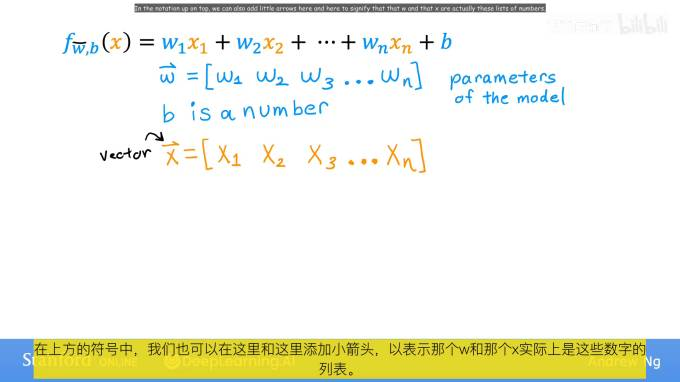
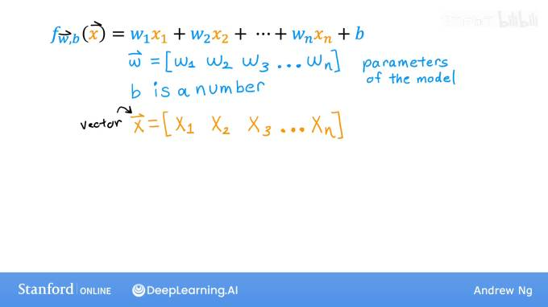
有了这种符号，模型现在可以更简洁地重写为 f 括号 x 等于向量 w 点乘 x，再加上数字 b。07:44
这个点指的是线性代数中向量 x 的点积。07:55
那么这个点积到底是什么呢？08:05
嗯，两个向量，即两组数字列表 w 和 x 的点积，是通过取对应的数字对 w 一和 x 一，将它们相乘，w 二、x 二；相乘，w 三、x 三，相乘，一直到 wn、xn，相乘，然后将所有这些乘积相加来计算的。08:07
写出来就是，这意味着点积等于 w 一 x 一加 w 二 x 二加 w 三 x 三，一直加到 wn xn。08:42
你会注意到，这给了我们和上面完全相同的表达式。09:06
所以点积符号让你能用更少、更紧凑的形式来书写模型。09:12
这种具有多个输入特征的线性回归模型，其名称是多元线性回归。09:20
这与单变量回归形成对比，后者只有一个特征。09:26
顺便提一下，你可能以为这个算法叫多变量回归，但那术语实际上指的是其他东西，我们这里不会。09:32
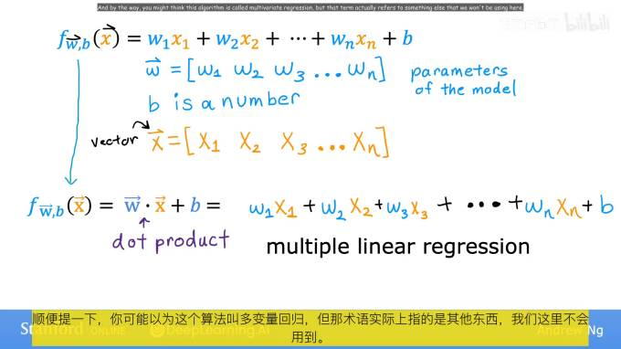
所以我要称这个模型为多元线性回归。09:42
以上就是具有多个特征的线性回归，也称为多元线性回归。09:47
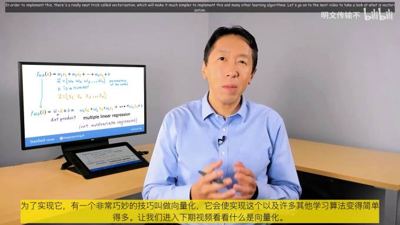
为了实现它，有一个非常巧妙的技巧叫做向量化，它会使实现这个以及许多其他学习算法变得简单得多。让我们进入下期视频看看什么是向量化。10:07